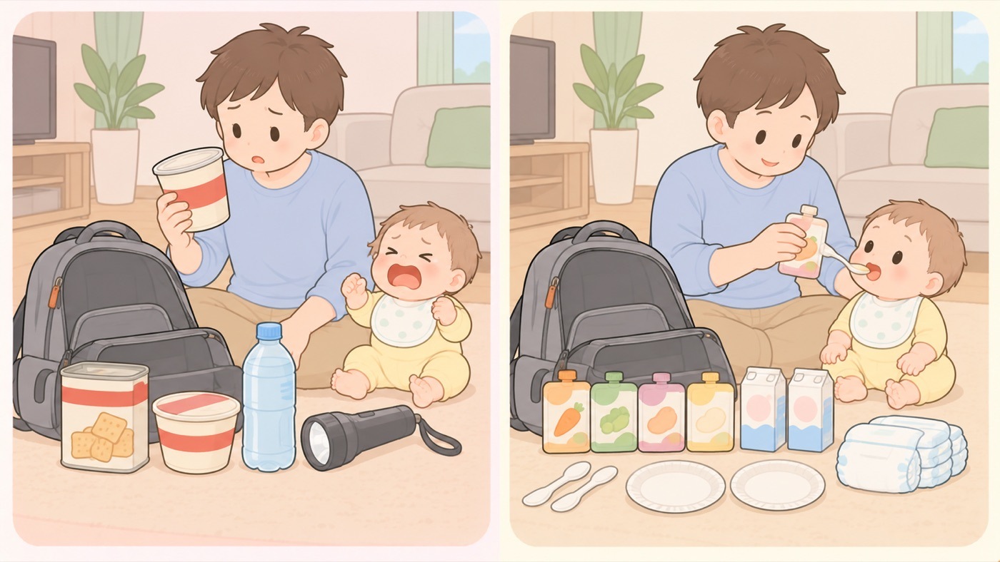

もしものとき
離乳食が始まってからの災害への備え
ミルクだけの備えでは足りなくなる。月齢に合う固さのものを備え直す
離乳食が始まると、備えるものが変わります。日本栄養士会は、災害時の対応を月齢ごとに分け、5〜6か月はミルクで対応、7〜11か月はおかゆ状のもので対応としています。大人の非常食は、この時期の子どもには硬すぎるか、塩分が強すぎます。

- すること：ベビーフードを、いまの月齢の区分で備える
「7か月頃から」「9か月頃から」と書かれた区分のものを選びます。月齢が上がるたびに入れ替えます。そのまま食べられるもの（お湯で戻さないもの）を混ぜておくと、断水しているときに使えます。 - すること：ミルクの備えは、やめずに続ける
日本栄養士会は、5〜6か月はミルクで対応としています。離乳食が進んでも、食べられるものが限られる時期こそミルクが頼りになります。液体ミルクと使い捨て哺乳瓶は、そのまま備え続けます。 - すること：食べさせる道具まで備える
スプーン、小皿、使い捨てのおしぼり。内閣府男女共同参画局の備蓄チェックシートにも、離乳食と並べて皿・スプーンが挙げられています。洗えない前提で、使い捨てを多めにします。 - しないこと：残った離乳食を、取っておかない
こども家庭庁は、残った育児用ミルクを処分するよう求めています。離乳食も同じで、衛生を保てない状況では作り置きができません。1回で食べきる量の包装を選びます。 - すること：アレルギーがあるなら、自宅に買い置きする
アレルギー対応のミルクや食品は、避難所では手に入りにくいものです。内閣府男女共同参画局の備蓄チェックシートも、粉ミルクと離乳食の両方にアレルギー対応を明記しています。アレルギーの内容を書いたカードを、持ち出すものに入れておきます。 - すること：はいはい・つかまり立ちを前提に、避難先を考える
この時期は、床に置くと自分で動きます。避難所の床は土足で歩く場所です。レジャーシートや大きめのタオルを、寝かせる場所を区切るために入れておきます。
この月齢で備えるもの（0〜3か月からの差分）
- ベビーフード（いまの月齢の区分。そのまま食べられるものを混ぜる）
- 使い捨てのスプーン・小皿
- 紙おむつ（M〜Lサイズに切り替わる時期）
- アレルギーがあるなら、対応ミルクと対応食品、アレルギーを書いたカード
- 寝かせる場所を区切るレジャーシート
液体ミルク・使い捨て哺乳瓶・おしりふき・母子健康手帳のコピーは、 0〜3か月タブ「赤ちゃんがいる家の災害への備え」から続けて備えます。
🛍 グッズの選び方
PR- ベビーフードは月齢の区分が書かれたものを選びます。「9か月頃から」のように書かれています。月齢が上がるたびに入れ替えます。
- お湯で戻さずそのまま食べられるものを混ぜておきます。断水しているときに、これだけが頼りになります。
- 1回で食べきれる包装にします。衛生を保てない状況では、残したものを取っておけません。
- ミルクの備えはやめずに続けます。食べられるものが限られる時期ほど、ミルクで量を補えます。
- ピジョン 食育レシピ 9か月から 80g 16個アソート（レトルト・そのまま食べられる）9か月から。そのまま食べられるAmazonで見る →（新しいタブで開きます）
- 明治ほほえみ らくらくミルク防災セット15本（使い切り哺乳ボトル15個入り）液体ミルクと使い切りボトルが一組。水も消毒も要らないAmazonで見る →（新しいタブで開きます）
- クロビスベビー ステリボトル 使い捨て哺乳瓶 240ml 5個入り（消毒不要・日本正規品）消毒不要。断水していても使えるAmazonで見る →（新しいタブで開きます）
- イワタニ カセットコンロ 達人スリムV CB-TS-5（日本製）ガスが止まってもお湯をわかせるAmazonで見る →（新しいタブで開きます）
- 防災グッズ 32点セット（防災士監修・1人用）一式そろう。足りないものを考えずに済むAmazonで見る →（新しいタブで開きます）
リンクはAmazonアソシエイトリンクです。当サイトはアフィリエイトプログラムに参加しています。Amazonのアソシエイトとして、当サイトは適格販売により収入を得ています。 選び方の方針
この項目の根拠
- 災害時における乳幼児の栄養支援の手引き（日本栄養士会 JDA-DAT 赤ちゃん防災プロジェクト・PDF）（新しいタブで開きます）
災害時の離乳の目安として、5〜6か月はミルクで対応、7〜8か月および9〜11か月はおかゆ状のもので対応、12〜18か月はごはんで対応とされていること。 - 災害対応力を強化する女性の視点 備蓄チェックシート（内閣府男女共同参画局・PDF）（新しいタブで開きます）
乳幼児用品として、離乳食（アレルギー対応食を含む）、皿・スプーン、粉ミルク（アレルギー用含む）又は液体ミルクを挙げていること。 - 避難所等で生活している妊産婦・乳幼児に対する支援のポイント（こども家庭庁・PDF）（新しいタブで開きます）
残った育児用ミルクは処分すること。調乳の前に必ず手洗いまたはアルコール消毒を行い、平時よりも安全・衛生管理に留意すること。